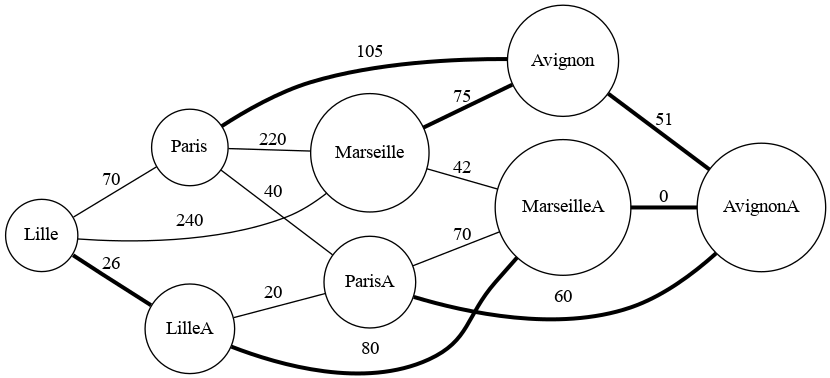

Recherche du plus court itinéraire
Projet visant à trouver le chemin le plus court parmi un graphe de routes, ainsi qu'un jeu de données. Ce jeu de données contient les valeurs des routes.
Royer Baptiste
6/19/2024 · 0 min read

Projet visant à trouver le chemin le plus court parmi un graphe de routes, ainsi qu'un jeu de données. Ce jeu de données contient les valeurs des routes.
Royer Baptiste
6/19/2024 · 0 min read